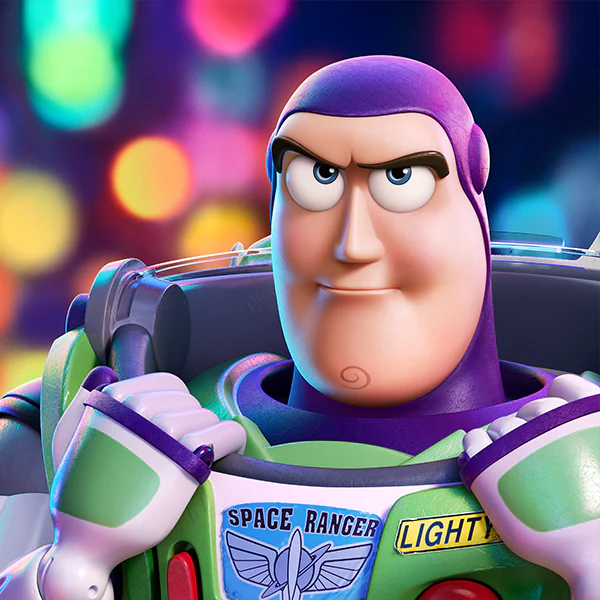

Toy Story4
Woody

Woody is the same pull-string cowboy sheriff that Andy fell in love with years ago. He's found a new home with Bonnie and her toys, and he'll do anything to make sure she's happy and they're all taken care of. But an unexpected reunion with his dear friend Bo Peep shows Woody that the world is much bigger than he ever imagined.
"Ya know, you've handled this lost toy life better than I could."
"You can't teach this old toy new tricks."
"Because it's all I have left to do!... I don't have anything else..."
Woody
Buzz Lightyear is loyal not only to his owner, but to the friends he's made along the way especially his once-rival Woody who's like a brother to the ace Space Ranger these days. Buzz would do anything to support his pull-string buddy, but when his efforts land him in a carnival game booth as an inadvertent prize, he turns to his inner voice for guidance.
"This is an intergalactic emergency."
"Do you know these life forms?"
"My eyeballs could have been sucked from their sockets!"
Bo Peep

Bo Peep is a long-lost friend of Woody, Buzz and the gang, who always shared a special connection with Woody while residing with her sheep on a lamp base at Andy's house. After being separated for years, Bo has become chipped and discarded, but her spirit is far from broken. She has grown into an adventure-seeking free spirit whose strength and sarcasm belie her delicate porcelain exterior.
"Open your eyes, Woody. There's plenty of kids out there. Sometimes change can be good!
"So, How About You, How's Your New Kid?"